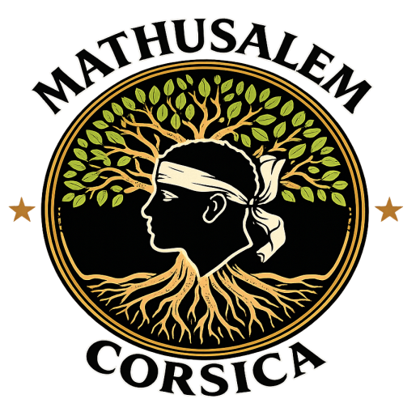

Être présent
Écouter, visiter, prendre des nouvelles et rompre la solitude.

MathusalemSolidarité · Fraternité · Présence
Au-delà des colonnes, le lien demeure. Mathusalem Corsica est au service des Sœurs et des Frères que l'âge, la maladie ou les difficultés de la vie ont éloignés de la vie maçonnique.
Mathusalem
Corsica
« J'ai été ce que vous êtes, vous serez ce que je suis. »
Notre mission
Notre rôle est de préserver le lien fraternel, avec tact, respect et discrétion. Nous complétons l'action des Loges et de leurs œuvres hospitalières.
Écouter, visiter, prendre des nouvelles et rompre la solitude.
Soutenir, accompagner et chercher ensemble des solutions concrètes.
Maintenir la Chaîne d'Union au-delà des Loges, sur toute l'île.
Agir à nos côtés
Une heure, une visite, un appel, un trajet ou une compétence mise à disposition peuvent faire une différence considérable.
Un besoin autour de vous ?
Vous connaissez une Sœur ou un Frère isolé, malade, en difficulté ou éloigné de la vie maçonnique ? Contactez-nous. Chaque situation est étudiée avec discrétion, respect et fraternité.
Écrivez-nous : mathusalem.corsica@orange.fr
L'association
Présente sur l'ensemble de l'île, l'association fédère les bonnes volontés pour que l'insularité ne soit jamais un obstacle supplémentaire pour celles et ceux qui sont fragilisés.
Notre engagement
Agir en complément des Loges et des dispositifs existants, sans jamais s'y substituer.